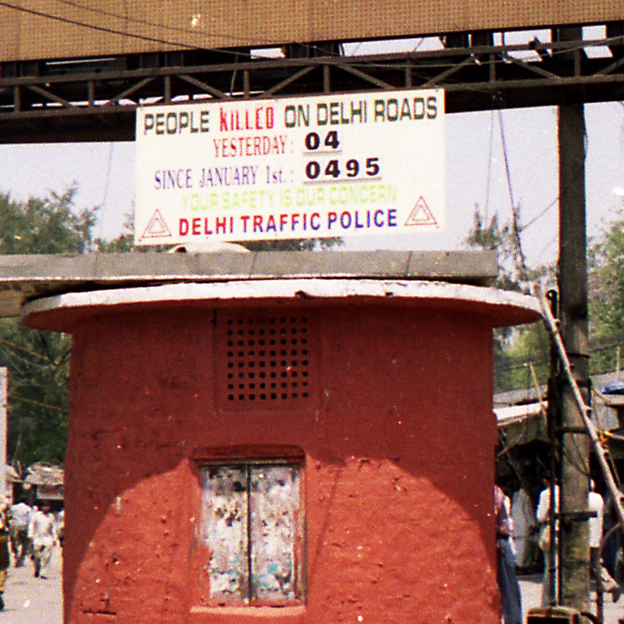
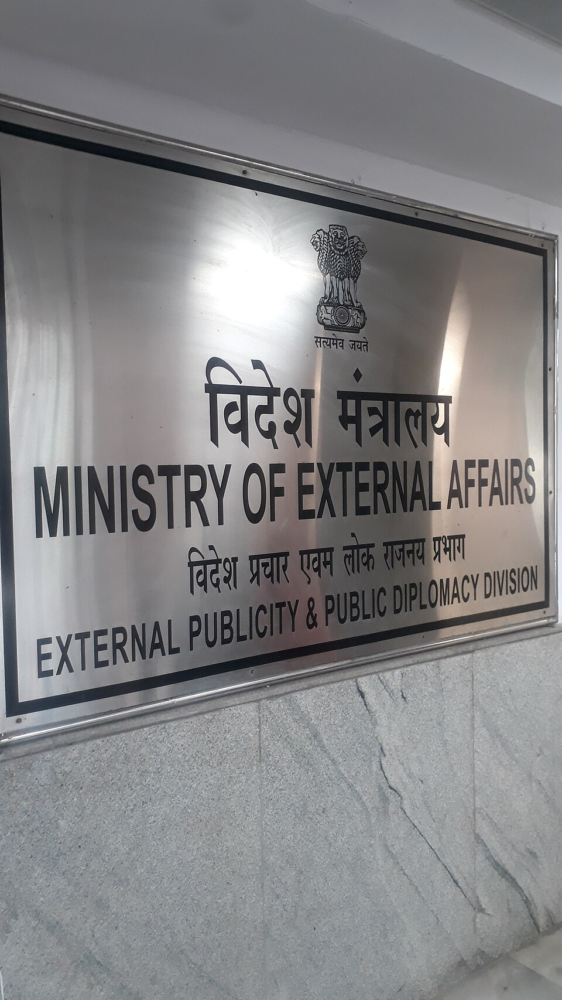

पुतिन, ट्रंप और जिनपिंग की शेनझेन बैठक को रूस ने बताया ऐतिहासिक
रूस ने पुतिन, ट्रंप और जिनपिंग की त्रिपक्षीय बैठक को वैश्विक राजनीति में बदलाव का संकेत बताया है। हालांकि, इस बीच यूक्रेन पर रूसी हमले जारी हैं और शांति दावों पर सवाल उठ रहे हैं।
ताज़ा ख़बरें
सलमान खान ने की 'दबंग 4' की पुष्टि, जल्द शुरू होगी नई फिल्म
बॉलीवुड अभिनेता सलमान खान ने अपनी लोकप्रिय फ्रेंचाइजी 'दबंग' के चौथे हिस्से की पुष्टि कर दी है। अभिनेता इन दिनों अपनी आगामी फिल्म 'मातृभूमि' के प्रमोशन में व्यस्त हैं।
राष्ट्रीयवाराणसी के नमो घाट पर 'भजन क्लबिंग' का आयोजन, पीएम मोदी ने की युवाओं के उत्साह की सराहना
वाराणसी के नमो घाट पर चार दिवसीय गंगा महोत्सव के दौरान 'भजन क्लबिंग' का आयोजन किया गया। आधुनिक बीट्स पर पारंपरिक भजनों के इस कार्यक्रम में युवाओं ने भारी उत्साह दिखाया, जिसकी प्रधानमंत्री नरेंद्र मोदी ने सराहना की है।
 राष्ट्रीय
राष्ट्रीयबीजेपी सांसद निशिकांत दुबे ने सोनिया गांधी और मारुति से जुड़े मामलों पर उठाए सवाल
बीजेपी सांसद निशिकांत दुबे ने सोनिया गांधी की मारुति से जुड़ी कंपनियों में हिस्सेदारी और पुरानी कांग्रेस सरकारों के दौरान फैसलों को लेकर कई गंभीर सवाल उठाए हैं।
 टेक
टेकबैंकिंग सेक्टर पर बढ़ा साइबर हमलों का खतरा, एआई और सुरक्षा टीमों में जंग
साइबर सुरक्षा विशेषज्ञों ने चेतावनी दी है कि एआई से लैस हैकरों और बैंकों की आईटी टीमों के बीच संघर्ष तेज हो गया है। जावा और अन्य तकनीकी खामियों के कारण भारतीय बैंकिंग व्यवस्था प्रभावित हो सकती है।
राष्ट्रीयहैदराबाद में मेटा दफ्तर पर यूथ कांग्रेस का प्रदर्शन, 21 कार्यकर्ता हिरासत में
भारतीय युवा कांग्रेस के नेताओं के इंस्टाग्राम अकाउंट रोके जाने के विरोध में हैदराबाद, मुंबई और गुरुग्राम स्थित मेटा कार्यालयों पर प्रदर्शन किया गया। हैदराबाद में तोड़फोड़ के बाद प्रदेश अध्यक्ष समेत 21 कार्यकर्ता हिरासत में लिए गए।
राष्ट्रीयकश्मीर घाटी में कोई स्थानीय आतंकी नहीं बचा, अमित शाह का बयान
केंद्रीय गृह मंत्री अमित शाह ने कहा कि कश्मीर घाटी में अब कोई स्थानीय आतंकवादी सक्रिय नहीं है। पुलवामा और कुलगाम में हालिया मुठभेड़ों में लश्कर-ए-तैयबा के स्थानीय आतंकियों के मारे जाने के बाद अब केवल पाकिस्तानी आतंकी बचे हैं।
अंतरराष्ट्रीयगुरपतवंत सिंह पन्नू हत्या साजिश मामला: निखिल गुप्ता को अमेरिका में 19 साल से अधिक की सजा
अमेरिकी अदालत ने खालिस्तानी अलगाववादी गुरपतवंत सिंह पन्नू की हत्या की साजिश से जुड़े मामले में भारतीय नागरिक निखिल गुप्ता को करीब 19 साल 7 महीने की सजा सुनाई है।
राष्ट्रीयमणिपुर के चंदेल जिले में जहरीली शराब पीने से 14 लोगों की मौत
मणिपुर के चंदेल जिले में जहरीली शराब पीने से 14 लोगों की जान चली गई है, जबकि 300 से अधिक लोगों को विभिन्न अस्पतालों में भर्ती कराया गया है। प्रशासन ने मेथनॉल विषाक्तता की आशंका जताई है।
राष्ट्रीयकानून के पेशे में सफलता का कोई शॉर्टकट नहीं, मेहनत ही सबसे बड़ा मंत्र: अभिषेक मनु सिंघवी
कांग्रेस के वरिष्ठ नेता और वरिष्ठ वकील अभिषेक मनु सिंघवी ने कहा है कि वकालत में सफलता का कोई निश्चित फॉर्मूला नहीं है, लेकिन इसमें 99 प्रतिशत योगदान लगातार मेहनत का होता है।
 राष्ट्रीय
राष्ट्रीयपीएम मोदी का पश्चिम बंगाल, बिहार और उत्तर प्रदेश का दौरा आज
प्रधानमंत्री नरेंद्र मोदी आज पश्चिम बंगाल, बिहार और उत्तर प्रदेश के दौरे पर हैं। वे आईआईटी खड़गपुर के समारोह में शामिल होने के अलावा विभिन्न विकास परियोजनाओं की सौगात देंगे।
व्यापारदेश के कई शहरों में चीनी हुई महंगी, दाम 70 रुपए प्रति किलो के करीब पहुंचे
देशभर में चीनी की कीमतों में लगातार बढ़ोतरी हो रही है और कई शहरों में भाव 70 रुपए प्रति किलो के करीब पहुंच गए हैं। पिछले एक साल में चीनी के दामों में 30 फीसदी तक का इजाफा हुआ है।
राष्ट्रीयबिहार: बाहुबली विधायक अनंत सिंह ने अपनी बेटी की शादी में दामाद को दिए जेवर और बर्तन
बिहार के मोकामा से विधायक अनंत सिंह ने अपनी बेटी की शादी में दामाद को लग्जरी गाड़ी डिफेंडर, 18 तोला सोने के आभूषण और सोने-चांदी के बर्तन उपहार में दिए हैं।
राष्ट्रीयआईआईटी खड़गपुर के प्लेटिनम जुबली समारोह में शामिल हुए पीएम मोदी
प्रधानमंत्री नरेंद्र मोदी ने देश के पहले भारतीय प्रौद्योगिकी संस्थान, आईआईटी खड़गपुर के प्लेटिनम जुबली समारोह में हिस्सा लिया और '75 वॉइसेज फॉर विकसित भारत' पहल के तहत छात्रों से संवाद किया।

राष्ट्रीयदक्षिण दिल्ली में शादियों के कारण ट्रैफिक जाम की आशंका, पुलिस ने जारी की एडवाइजरी
दक्षिण दिल्ली में शनिवार को 27 से अधिक शादियों के कारण भारी ट्रैफिक जाम की आशंका है। दिल्ली ट्रैफिक पुलिस ने एडवाइजरी जारी कर लोगों को मेट्रो का उपयोग करने और प्रभावित रास्तों से बचने की सलाह दी है।
राष्ट्रीयमेटा के ऑफिसों में यूथ कांग्रेस का प्रदर्शन, चार के खिलाफ एफआईआर
इंस्टाग्राम अकाउंट सस्पेंड होने के विरोध में यूथ कांग्रेस ने हैदराबाद, मुंबई और गुरुग्राम में मेटा के ऑफिसों के बाहर प्रदर्शन किया। मुंबई पुलिस ने यूथ कांग्रेस अध्यक्ष समेत चार लोगों के खिलाफ मामला दर्ज किया है।
 खेल
खेलभारत-न्यूजीलैंड पहला टेस्ट: केएल राहुल का शतक, तीसरे दिन भारत की मजबूत बढ़त
वेलिंगटन टेस्ट के तीसरे दिन केएल राहुल के शानदार शतक और अर्धशतकों की मदद से भारत ने न्यूजीलैंड पर 118 रन की बढ़त हासिल कर ली है।

अंतरराष्ट्रीयपाकिस्तानी मंत्री के भारत दौरे पर कांग्रेस का विरोध, सरकार ने दी सफाई
पाकिस्तान के जलवायु परिवर्तन मंत्री मुसादिक मलिक के दिल्ली दौरे पर कांग्रेस ने सरकार को घेरा है। विदेश मंत्रालय ने स्पष्ट किया है कि यह शंघाई सहयोग संगठन का बहुपक्षीय मंच है।
राष्ट्रीयइंदौर में डबल मर्डर: घर में बेटी और बोरे में मिला पिता का शव
मध्य प्रदेश के इंदौर में दो अलग-अलग स्थानों पर पिता-पुत्री के शव मिलने से सनसनी फैल गई है। पुलिस ने संपत्ति विवाद के चलते मृतक के बेटे पर हत्या की आशंका जताई है।
राष्ट्रीयरामा और श्यामा तुलसी में क्या है अंतर, घर में कौन सी लगाना माना जाता है शुभ
हिंदू धर्म में रामा और श्यामा तुलसी दोनों को पवित्र माना गया है। जानिए दोनों में क्या अंतर है और घर में कौन सी तुलसी लगाना ज्यादा शुभ होता है।
 व्यापार
व्यापाररणबीर कपूर की फिल्म 'रामायण' ने 16वें दिन ₹900 करोड़ के करीब पहुंचाई कमाई
रणबीर कपूर अभिनीत पौराणिक फिल्म 'रामायण' ने रिलीज के 16वें दिन बॉक्स ऑफिस पर मजबूत पकड़ बनाए रखी है। फिल्म ने देश में ₹900 करोड़ के नेट कलेक्शन का आंकड़ा पार करने के करीब पहुंच चुकी है।
 खेल
खेलऑस्ट्रेलियाई तेज गेंदबाज जोश हेजलवुड का पैट कमिंस को समर्थन, टेस्ट कप्तानी हटाने पर दी प्रतिक्रिया
जोश हेजलवुड ने टेस्ट कप्तान पैट कमिंस का समर्थन करते हुए कहा है कि अगर कमिंस को कप्तानी से हटाया जाता है, तो वह अपने टेस्ट करियर के भविष्य पर विचार करेंगे। साथ ही उन्होंने 2018 के सैंडपेपर विवाद में अपनी भूमिका से इनकार किया है।
राष्ट्रीयकिरेन रिजिजू का राहुल गांधी पर पलटवार, 1962 के युद्ध और आर्थिक नीतियों पर पूछे सवाल
केंद्रीय मंत्री किरेन रिजिजू ने राहुल गांधी के ‘कम्प्रोमाइज्ड PM’ वाले बयान पर नाराजगी जताई है। उन्होंने 1962 के भारत-चीन युद्ध और पिछली आर्थिक नीतियों को लेकर कांग्रेस से जवाब मांगा है।
टेकबचपन में बार-बार सीटी स्कैन कराने से बढ़ सकता है ब्रेन ट्यूमर का खतरा
अमेरिका और कनाडा में हुई एक नई रिसर्च के अनुसार, बचपन में बार-बार सीटी स्कैन कराने से मिलने वाली रेडिएशन की वजह से बच्चों में ब्रेन ट्यूमर का जोखिम बढ़ सकता है। मेडिकल जर्नल JAMA में यह स्टडी प्रकाशित हुई है।
अंतरराष्ट्रीयअमेरिका-ईरान जंग के नौ महीने बाद भी दुनिया में नहीं बढ़ा खाने का संकट
अमेरिका-ईरान संघर्ष और खराब मौसम के बावजूद दुनिया भर में खाने-पीने की चीजों के दाम नियंत्रण में हैं। भरे हुए गोदामों और पर्याप्त स्टॉक के कारण वैश्विक स्तर पर अनाज संकट की आशंकाएं गलत साबित हुई हैं।
राष्ट्रीयमुख्यमंत्री योगी आदित्यनाथ ने मां सावित्री देवी को दी अंतिम विदाई
उत्तर प्रदेश के मुख्यमंत्री योगी आदित्यनाथ अपनी मां सावित्री देवी के निधन पर अंतिम यात्रा के दौरान भावुक नजर आए। उन्होंने पार्थिव शरीर को कंधा दिया और हरिद्वार में अंतिम संस्कार किया जाएगा।
राष्ट्रीयबाराबंकी में पूर्वांचल एक्सप्रेसवे पर भीषण सड़क हादसा, पिकअप और एंबुलेंस की टक्कर में पांच की मौत
उत्तर प्रदेश के बाराबंकी जिले में पूर्वांचल एक्सप्रेसवे पर एक पिकअप और एंबुलेंस के बीच हुई टक्कर में पांच लोगों की मौत हो गई। सूचना मिलने पर पुलिस और राहत दल मौके पर पहुंचे।
 राष्ट्रीय
राष्ट्रीयसीबीएसई कक्षा 10 गणित की परीक्षा 17 फरवरी को होगी आयोजित
केंद्रीय माध्यमिक शिक्षा बोर्ड (CBSE) ने 10वीं कक्षा की गणित परीक्षा की तारीख घोषित कर दी है। परीक्षा 17 फरवरी को सिंगल शिफ्ट में होगी।
अंतरराष्ट्रीयपैंक्रियाटिक कैंसर के इलाज में मिली बड़ी कामयाबी, नई दवा से ट्यूमर नियंत्रित
पैंक्रियाटिक कैंसर के शुरुआती परीक्षण में कीमोथेरेपी के साथ नई दवा देने से कुछ मरीजों के ट्यूमर स्कैन में गायब दिखे। विशेषज्ञों ने इसे दशकों में सबसे बड़ी प्रगति बताया है।
राष्ट्रीयमणिपुर के चंदेल जिले में जहरीली शराब पीने से 11 लोगों की मौत, 300 से अधिक अस्पताल में भर्ती
मणिपुर के चंदेल जिले में जहरीली शराब पीने से 11 लोगों की मौत हो गई है और 300 से अधिक लोगों को अस्पतालों में भर्ती कराया गया है। मुख्यमंत्री युमनाम खेमचंद सिंह ने स्थिति का जायजा लिया और जांच के आदेश दिए हैं।
 अंतरराष्ट्रीय
अंतरराष्ट्रीयअमेरिकी राष्ट्रपति ट्रंप ने एनवीडिया के पूर्व सीईओ जेन्सेन हुआंग का किया समर्थन
अमेरिकी राष्ट्रपति डोनाल्ड ट्रंप ने एनवीडिया के पूर्व सीईओ जेन्सेन हुआंग का समर्थन करते हुए उन्हें एक और मौका देने की वकालत की है। हालांकि, कंपनी के बोर्ड ने फिलहाल उनकी वापसी से इनकार किया है।
अंतरराष्ट्रीयशेनझेन में ट्रंप और शी जिनपिंग ने साथ देखी ‘Y.M.C.A.’ गाने की प्रस्तुति
चीन के शेनझेन में एक भोज के दौरान अमेरिकी राष्ट्रपति डोनाल्ड ट्रंप और चीनी राष्ट्रपति शी जिनपिंग ने ‘Y.M.C.A.’ गाने की प्रस्तुति साथ बैठकर देखी।
 व्यापार
व्यापारअमेरिकी शेयर बाजार में एआई शेयरों में भारी बिकवाली, नैस्डैक में पांच प्रतिशत से अधिक की गिरावट
अमेरिकी शेयर बाजार में एआई और सेमीकंडक्टर शेयरों में भारी बिकवाली के चलते नैस्डैक में 5.28% की बड़ी गिरावट दर्ज की गई है। मार्च 2020 के बाद टेक इंडेक्स के लिए यह सबसे बड़ी साप्ताहिक गिरावट है।
 अंतरराष्ट्रीय
अंतरराष्ट्रीयनेपाल के प्रधानमंत्री बालेन शाह दो दिवसीय आधिकारिक दौरे पर रविवार को पहुंचेंगे दिल्ली
नेपाल के प्रधानमंत्री बालेन शाह पद संभालने के बाद अपनी पहली विदेश यात्रा पर रविवार को दिल्ली पहुंच रहे हैं। इस दौरान प्रधानमंत्री नरेंद्र मोदी और अन्य वरिष्ठ अधिकारियों के साथ द्विपक्षीय बैठकों में कई अहम मुद्दों पर चर्चा होगी।
राष्ट्रीयदादा साहब फाल्के इंटरनेशनल फिल्म फेस्टिवल अवॉर्ड्स 2026 की घोषणा, 'धुरंधर' बनी सर्वश्रेष्ठ फिल्म
साल 2026 के लिए दादा साहब फाल्के इंटरनेशनल फिल्म फेस्टिवल अवॉर्ड्स का एलान कर दिया गया है। फिल्म 'धुरंधर' को सर्वश्रेष्ठ फिल्म चुना गया है, जबकि रणवीर सिंह और कमल हासन समेत कई हस्तियों को सम्मानित किया गया है।
राष्ट्रीयपंजाब: ASI इकबाल सिंह हत्याकांड का मुख्य शूटर मुठभेड़ के बाद गिरफ्तार
पंजाब पुलिस की एंटी-गैंगस्टर टास्क फोर्स ने जीरकपुर के एक होटल में मुठभेड़ के बाद एएसआई इकबाल सिंह हत्याकांड के मुख्य आरोपी हरप्रीत सिंह उर्फ हैप्पी बहमन को गिरफ्तार कर लिया है।
राष्ट्रीयदिल्ली में महिला इंफ्लुएंसर से शादी की जिद करने वाले युवक की मौत, दो गिरफ्तार
दिल्ली में एक महिला इंफ्लुएंसर से शादी की जिद पर अड़े युवक की पिटाई के बाद मौत हो गई। पुलिस ने मामले की जांच के बाद महिला के पिता और एक पड़ोसी को गिरफ्तार कर लिया है।
खेलशिखर धवन का खुलासा, चार साल से बेटे जोरावर से नहीं हुई कोई बात
पूर्व भारतीय क्रिकेटर शिखर धवन ने एक इंटरव्यू में खुलासा किया है कि वह पिछले चार साल से अपने बेटे जोरावर से बात नहीं कर पाए हैं। उन्होंने उम्मीद जताई है कि भविष्य में उनके रिश्ते सुधरेंगे।
अंतरराष्ट्रीयपोलैंड के हवाई क्षेत्र में गिरी रूसी मिसाइल, सैन्य अभ्यास के दौरान हुई घटना
पोलैंड में एक रूसी मिसाइल गिरने की घटना सामने आई है। प्रधानमंत्री डोनाल्ड टस्क के अनुसार, यह घटना तब हुई जब पश्चिमी देशों की सेनाएं इलाके में सैन्य अभ्यास कर रही थीं।
राष्ट्रीयपूर्वी दिल्ली के मधु विहार में शादी का प्रस्ताव देने पहुंचे युवक की हत्या
पूर्वी दिल्ली के मधु विहार इलाके में एक सोशल मीडिया इंफ्लुएंसर को शादी का प्रस्ताव देने गए युवक की बेरहमी से पिटाई के बाद मौत हो गई। पुलिस ने लड़की के पिता समेत कई आरोपियों को गिरफ्तार किया है।